- 发帖数量：12 条（均为星主 Jason不跪 本人发布，共 26 张图；帖 2 另带 1 个 PDF 附件）
- 时间范围（美西时间 PDT）：2026-10-23 12:14 – 16:42（对应北京时间 10-24 03:14 – 07:42）
- 筛选口径：只收录晚于 2026-10-23T04:58:58.207+0800 的帖子（该时刻本身的那条是上一期最后一帖，不重复收录）。
- 说明：本期全部数据来自帖子正文与截图，未另行核验；带“目测 / 估算 / 推算 / 推测”字样的内容是我自己根据原图或原文数字做的粗算与判断，不是原文。涉及俄乌和平计划的内容都是媒体转述、未经官方确认。内容仅作学习宏观知识之用，不构成投资建议。
今日要点速览
全球利率“重新定价”与 AI 融资担忧撞在一起（美债 10 年期约 5%、央行继续加息、科技股和黄金同跌、油价冲到约 112 美元），而中国呈现“外需靠 AI 出口撑着、内需（地产、居民、财政）依然偏弱”的结构，今天的长文都在讨论怎么补上内需这块短板。 前三分之一是“利率”主线：摩根大通上调新西兰加息预期、高盛讲美国加息 / 中国降息的“剪刀差”怎么影响股市、华泰复盘美债价格单日大涨（10 年期收益率单日降约 17 个基点）后资产相关性发生的变化。中段是中国内需的“体检”：上海二手房的价差在收窄（也许是见底迹象）、李迅雷的长文和中央党校学报的文章都指向“投资于人”，摩根大通则指出 9 月财政收入首次转负、支出只增 1.0%。后段是资金与地缘：桥水降了黄金仓位，国家队 ETF 成交创 7 月以来新高，特朗普的俄乌和平计划细节流出，最后是美国养老地产的人口逻辑和中国写字楼租金的继续下探。
帖 1 · 2026-10-23 12:14（美西）· 摩根大通：新西兰央行下周改为加息
摩根大通把新西兰央行（RBNZ）下周的预测从“暂停”改成“加息 25 个基点”，并预计 12 月、明年 2 月再各加一次，政策利率最终到 3.50%；澳大利亚央行 11 月加息的风险上升，但摩根大通的“主预测”仍是不动。读全文收起
帖子原文
JPM： 我们正式将新西兰央行下一次会议的预测从暂停加息调整为加息25个基点，同时认为澳大利亚11月加息风险上升，但基准预测仍是维持利率不变。预估新西兰央行从目前2.75%的OCR继续加息三次，每次25个基点，最终达到3.50%。 #其他国家经济#

背景与关键数据
- OCR（Official Cash Rate，官方现金利率）：新西兰央行的政策利率，相当于美国的联邦基金利率。目前 2.75%。
- 基点（bp）：1 个基点 = 0.01%，25 个基点 = 0.25 个百分点。
- 数字核对：2.75% + 0.25%×3 = 3.50%，与原文一致；三次分别是下周、12 月、明年 2 月。
- “终点利率”（terminal rate）：这一轮加息周期预计升到的最高点，这里是 3.50%。
- 和昨天的帖子连起来看：上一期（10-22）彭博帖说，新西兰三季度 CPI 同比 3.7%（低于预期的 3.8%），但核心指标上升，互换市场给“下周加息 25bp”定价约 83%。今天摩根大通是“向市场定价靠拢”——它此前的预测是 10 月“战术性暂停”。
图片解读
截图是摩根大通澳新经济研究的周报（2026 年 10 月 23 日），红框标出的核心句是：“在一个相对接近的判断中，我们现在预计 RBNZ 下周加息；我们维持剩余两次加息（12 月、2 月）的预测，终点 3.50%。”从截图里能读到它改口的理由（原文大意）：
- 今年原本预期 RBNZ 从宽松的起点加息 100 个基点、中间 10 月暂停。（我的推算：如果今年起点约 2.25%，现在的 2.75% 说明已加了约 50bp，剩 12 月、2 月两次正好 50bp，合计 100bp；现在把 10 月加回来，今年总量变成 125bp。）
- 活动数据（经济活动）很强，即使油价更高；企业调查继续强；RBNZ 首席经济学家 Conway 对上周的“利率抛售”（市场把利率预期推高）没有表示反对——这等于默认了市场的加息押注。
- 三季度 CPI 的结构与摩根大通的预测接近：旅行价格涨幅最大（国际旅行季环比 +14%、国内机票 +7.5%，原文说符合季节性规律），食品 +1%，燃油 −6.5%——也就是说，CPI 里没有足够的“降温”证据来支持继续暂停。
- 右栏提到住房信贷增速在放慢（高利率的效果），但企业信贷更有韧性（部分是谨慎性备货、成本上涨导致）。
为什么重要 / 对市场和经济的含义
这条的信息不是“新西兰要加息”本身，而是全球央行没有一起转向宽松：美国在谈 12 月再加息（见帖 2），新西兰在加，澳洲 11 月也有风险。原因是油价高、活动数据强、核心通胀黏。对资产价格而言，新西兰、澳大利亚的加息预期上升通常支撑新西兰元、澳元，并抬高这些国家债券的收益率；对全球而言，它是“利率长期高位”这个大叙事的又一块拼图——这也是后面帖 6、帖 9 里“美债 5%”“黄金吸引力下降”的背景。
延伸知识
- 央行靠“沟通”管理预期：Conway 对市场加息押注“不反驳”这件事在央行圈里叫“默认”。央行如果不想让市场押注太多，通常会公开“泼冷水”；不泼冷水，市场就当他们同意。所以分析师读央行讲话，常常读的是“没说什么”。
- 小型开放经济的利率为什么跟全球走：新西兰、澳大利亚这类经济体进口依赖高、汇率波动大；全球利率上去、本币相对贬值，进口价格上涨会推高通胀，央行不得不跟着加息来稳汇率。这种“汇率→通胀→利率”的链条，是理解它们为什么常常和美国联动的关键。
帖 2 · 2026-10-23 12:20（美西）· 高盛：现金回报是对冲“美国利率上升、中国利率下降”的最佳办法
美国利率还要往上、中国利率却在往下，两边的“利率剪刀差”创了纪录；高盛的结论是：在这种环境下，现金流稳定、能持续分红的资产（银行、能源、保险、红利股）相对更抗跌，也就是“现金回报”是最好的对冲。读全文收起
帖子原文
高盛： 现金回报是应对美国利率上升、中国利率下降的最佳对冲。 经济团队预计，美联储将在2026年12月再次加息25个基点，此后维持利率不变，直到2027年下半年。市场已经开始定价：到2027年底，美联储政策利率还将累计上升约90个基点。但中国完全相反。中国10年期国债收益率徘徊在历史低位附近，约为1.6%。中国人民银行近期又将抵押补充贷款（PSL）利率下调25个基点至1.5%，以支持“六张网”相关投资。 通过历史研究发现：美国股票通常在美联储启动加息周期前后表现不佳。但经过一段时间的调整后，股市往往能够消化更高的政策利率，并在首次加息后的4至5个月恢复上涨趋势。中国和香港市场也存在类似现象。在美国启动加息周期后的前6个月，恒生指数和上证综指通常下跌或横盘震荡。此后大约需要3至4个季度，才可能恢复至此前高点。这是一种历史中位数规律，并不是对未来的确定预测。研究发现，当美国10年期国债收益率在一个月内出现超过两个标准差的上涨时，中国股票和亚洲股票往往表现较差对应的变化大约是：美国10年期名义收益率单月上升50个基点；美国10年期实际收益率单月上升40个基点。收益率适度上涨时，中国股票不一定下跌。港股比A股更脆弱。 当美国利率上升时，中国股票市场中通常表现较好的行业包括：能源；银行；一定程度上的保险。价值股、股息股以及能够稳定提供现金回报的企业，在美国利率上升时往往具有更好的相对表现。 #金融#
（带 1 个 PDF 附件：《Cash return is the best hedge to higher US rates (and lower China rates).pdf》。我没有下载附件，只读了帖子正文和附带的第一页截图。）
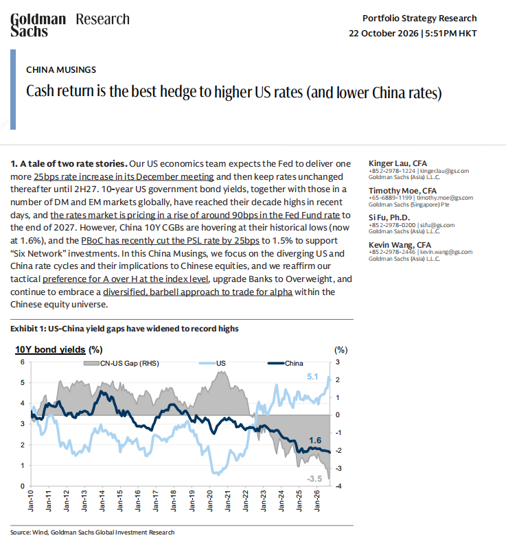
背景与关键数据
- 两国利率走向相反：美国——高盛经济团队预计 12 月再加息 25bp，然后一直不动到 2027 年下半年；市场定价更激进，到 2027 年底累计还要再加约 90bp。中国——10 年期国债收益率约 1.6%（历史低位），人民银行把 PSL 利率降 25bp 到 1.5%。
- PSL（抵押补充贷款）：央行给政策性银行的低成本资金，用来支持重点项目（比如基建），降它的利率相当于给这类项目“降融资成本”。“六张网”是中国近年提的重大基础设施网络概念，具体清单原文没展开，我这里不细列。
- “两个标准差”：统计学上，如果某个变量一个月的涨幅比平常的波动大得多（超过两个标准差），说明这是一次“冲击式”上涨。高盛给的换算：美国 10 年期名义收益率一个月涨约 50bp，或实际收益率（扣掉通胀预期）涨约 40bp，算这种冲击。
- 历史规律（中位数，不是预测）：美股在美联储启动加息周期前后表现差，首次加息后约 4–5 个月才恢复上涨；恒指和上证在美国启动加息周期后的前 6 个月通常下跌或震荡，再用约 3–4 个季度才回到前高。
- 哪些行业相对好：能源、银行、保险；价值股、股息股。港股比 A 股脆弱。
图片解读
截图是高盛“中国观察（China Musings）”报告的第一页（2026 年 10 月 22 日），标题就是“Cash return is the best hedge…”。
- 摘要段（原文大意）：美国 10 年期国债收益率和全球多个发达、新兴市场的长债收益率近几天都升到了十年高点；中国 10 年期国债却在历史低位约 1.6%。高盛在报告里的态度是：战术上继续偏好 A 股相对 H 股（指数层面）、把银行上调到“超配”，并继续用“哑铃式、分散化”的方式去找超额收益。
- Exhibit 1（图表 1）“美中收益率差距扩大到历史新高”：横轴 2010 年 1 月到 2026 年，纵轴左边是 10 年期国债收益率（%）。浅蓝线是美国，深蓝线是中国，灰色阴影（右轴）是“中国减美国”的差。看图：
- 2010–2019 年，中国收益率（约 3–4.5%）长期高于美国，灰色阴影在零线上方；
- 2020 年前后美国收益率跌到约 0.6%，差距最大；
- 2022 年之后两条线交叉，灰色阴影转到零线下方，差距一路扩大；
- 最右端：美国 5.1%、中国 1.6%，差距 −3.5 个百分点，是图里最低（即“美高中低”最极端）的位置。
为什么重要 / 对市场和经济的含义
两条线的“交叉”意味着：过去十几年中国国债是“高息资产”、资金乐意留在中国；现在变成美国长债收益率明显高于中国，人民币资产的相对吸引力下降，资金外流和汇率压力是风险。高盛提醒“港股比 A 股更脆弱”（我的解释：港股外资占比高、和美元利率联动更紧）。
投资含义（Jason 想让读者读到的）：当无风险利率上升，未来才赚钱的成长股被“打折”得更厉害（因为估值是把未来的钱折现回今天，利率越高打折越狠）；而现金流稳定、分红多的银行、能源、保险，对利率变化没那么敏感，相对更抗跌。这也呼应帖 9 桥水降黄金：利率高了，不产生现金流的资产吸引力下降。
延伸知识
- 蒙代尔“不可能三角”：一个经济体不可能同时拥有“资本自由流动、汇率稳定、货币政策独立”三样，最多选两样。当美国利率升、中国想降，如果资本流动开放且想稳汇率，中国降息就会有压力——这正是“美中利差创纪录”的背后约束。
- 股息率和国债收益率的“比较”：分红多的股票像“会涨价的债券”。当国债收益率很低（中国 1.6%），高股息股的相对吸引力就高；当国债收益率很高（美国 5%），债券和现金就和股票“抢钱”。这是为什么高盛说“现金回报”是对冲。
帖 3 · 2026-10-23 12:23（美西）· 普睿：上海二手房“价差收窄”
上海二手房出现“卖家愿意降价、买家价格也已经压不下去”的会合：成交价基本稳住（同比只跌 1%），挂牌价还在往下让，所以两者的差距快速缩小，折扣率从 72% 回升到 83%——这是一个典型的“见底前”信号，但还不是“见底”本身。读全文收起
帖子原文
普睿： 三季度上海二手住宅成交均价44527元/平方米，同比下跌1%、环比下跌0.1%，与成交端形成对照的是挂牌端。三季度挂牌均价53751元/平方米，同比下跌6.6%、环比下跌1.6%，仍在单边下行。一边是挂牌价继续退让，一边是成交价已经站住，两者的价差因此快速收窄：由2025年三季度的12552元/平方米收窄至三季度的9224元，收窄幅度达26.5%。 上海二手住宅的折扣率（成交均价/挂牌均价）在2025年10月探至72%的低点后持续回升，2026年三季度均值回到83%，较2025年三季度的78%提高4.7个百分点，9月单月82.4%。 真正发生结构性变化的是挂牌端。三季度全市挂牌套均面积96.9平方米、套均总价520.9万元，同比分别缩减12.5%和18.2%，9月单月94.6平方米、511.1万元，双双创下2024年以来最低。 #房价#
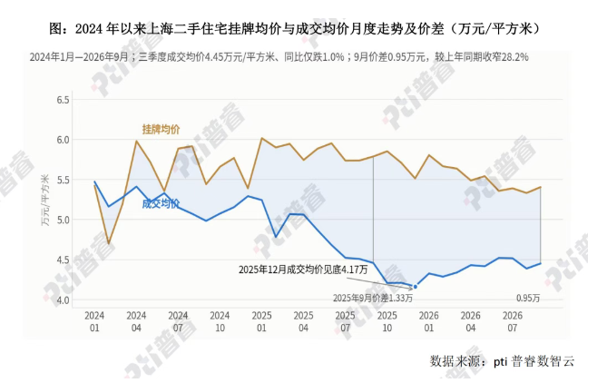
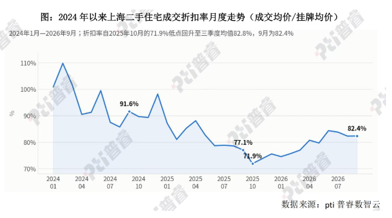
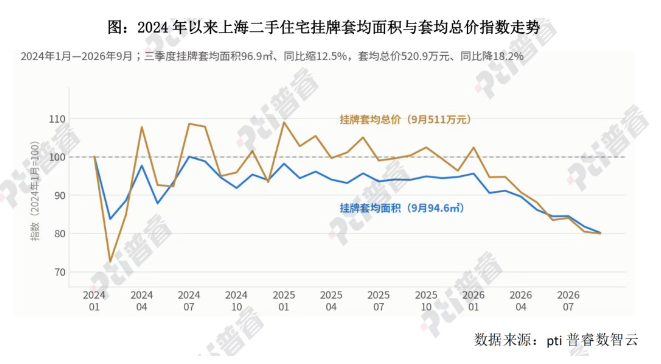
背景与关键数据
- 挂牌价 vs 成交价：挂牌价是卖家在中介平台上挂的心理价，成交价是双方真正签字的价格。价差＝挂牌价 − 成交价；折扣率＝成交价 ÷ 挂牌价。折扣率越低，说明买家砍价越多、市场越弱。
- 数字核对（我自己算了一遍，与原文一致）：53751 − 44527 = 9224 元/㎡；44527 ÷ 53751 ≈ 82.8%（原文取整“83%”）；与一年前相比，价差 12552 → 9224，缩小 3328，即 26.5%。
- “结构性变化”在挂牌端：套均面积 96.9㎡（同比 −12.5%）、套均总价 520.9 万元（同比 −18.2%）。二者相除：520.9 万 ÷ 96.9㎡ ≈ 5.38 万元/㎡，与挂牌均价 53751 一致；总价降幅（−18.2%）大于面积降幅（−12.5%），所以单价也下降（约 −6.5%）。
- 这里要小心**“均价”的结构效应**：如果挂牌的房子越来越小、越来越便宜（比如更多人把小户型挂出来），平均总价就会下降，哪怕同一套房的价格没变。所以“均价下跌”里有一部分是“卖的东西变了”，不全是“同一套房降价”。
图片解读
- 图 1（挂牌均价与成交均价月度走势及价差）：横轴 2024 年 1 月到 2026 年 9 月，纵轴单位万元/㎡。金色线是挂牌均价，蓝色线是成交均价，中间浅蓝色区域是价差。2024 年初两条线几乎重合（价差很小）；2025 年起，蓝线（成交价）明显下降，在 2025 年 12 月跌到 4.17 万元/㎡的低点（图中标注“见底”），之后缓慢回升到约 4.45 万；金线（挂牌价）在 5.4–5.9 万之间窄幅波动、2026 年起下行，价差从 2025 年 9 月的 1.33 万缩小到 2026 年 9 月的 0.95 万（图中标注，副标题称较上年同期收窄 28.2%）。
- 图 2（成交折扣率月度趋势）：纵轴 70%–110%，这是成交价 ÷ 挂牌价。2024 年初曾高于 100%（成交均价高于挂牌均价，我推测是结构效应——当月成交的房子比挂牌的房子更贵），之后一路下行；2025 年 9 月 77.1%，2025 年 10 月 71.9% 是低点；之后回升到 2026 年 9 月 82.4%，三季度均值 82.8%。
- 图 3（挂牌套均面积与套均总价指数，2024 年 1 月 = 100）：蓝线是面积，金线是总价。两条线从 2024 年初的 100 一路走低，到 2026 年 9 月都在 80 附近（面积 94.6㎡、总价 511 万），说明挂牌的房子在“变小变便宜”。
为什么重要 / 对市场和经济的含义
判断房价见底，一般看三步：①卖家的标价不再大幅下调；②折扣率回升（买卖双方开始“接近”）；③成交量和成交价同时企稳。上海现在大致处在第②步：折扣率从 72% 升到 83%，成交价同比只跌 1%。但挂牌价同比仍 −6.6%、而且是靠“挂小房子”拉低了均价，说明市场尚未恢复到“卖家敢提价”的状态。
对宏观的含义：房价影响居民的“财富效应”（觉得自己有钱就多消费）和地方的土地出让收入；如果上海这个最强的一线城市只是“稳住”，其他城市就更难谈回暖（对比帖 4、帖 12 里全国数据仍然偏弱）。
延伸知识
- 辛普森悖论／结构效应：整体平均数的变化，可能是“每一组内部变化”造成的，也可能是“各组占比变化”造成的。举例：如果这个月大户型挂得少、小户型挂得多，平均总价会下降，但没有任何一套房真的降价。看房价要看“同一类房子”的价格（像“同户型指数”），而不是只看均价。
- 日本的参考：1991 年日本泡沫破裂后，挂牌价和成交价长期背离，成交量萎缩，房价用了十几年慢慢见底。这只是一个历史参照，不代表上海会走同样的路径。
帖 4 · 2026-10-23 12:31（美西）· 李迅雷：以改革破除体制性障碍，以“投资于人”补齐需求短板
这篇长文的主线是：今年中国经济是“外强内弱、供强需弱”——出口、PPI、工业利润看起来漂亮，但很大程度靠 AI 硬件出口和大宗商品涨价这类“外部因素”；内需（地产、居民消费、投资）仍弱，根子在长期的“重投资于物、轻投资于人”。药方是：用改革破除体制障碍，把钱更多花到居民身上（社保、养老、育儿、医疗），否则明年出口回落后，经济下行压力更大。读全文收起
帖子原文
李迅雷： 以改革破除体制性障碍、以“投资于人”补齐需求短板，中国经济才能走出供强需弱的困局，迈向更加均衡、更可持续的增长。 #经济数据#
（带 8 张图，是一篇长文的截图，图中来源标注为 WIND、中泰国际。）
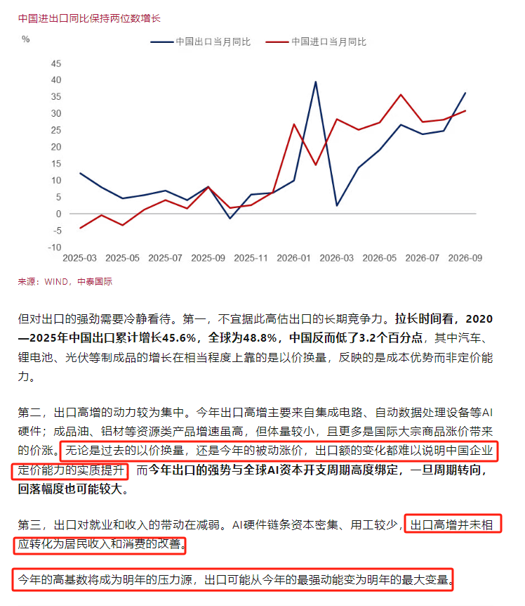
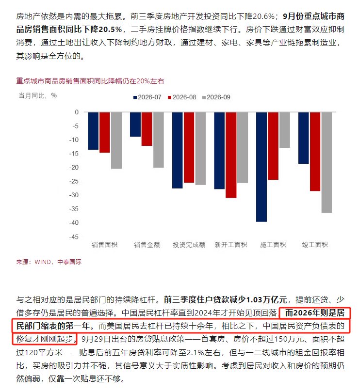
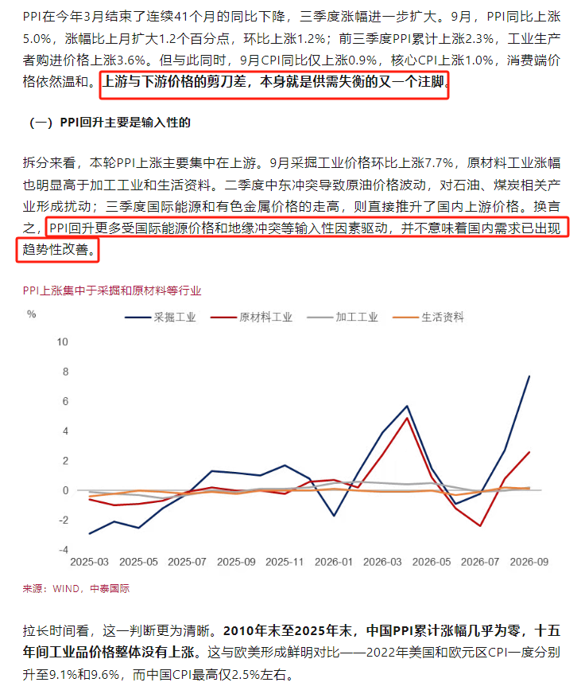
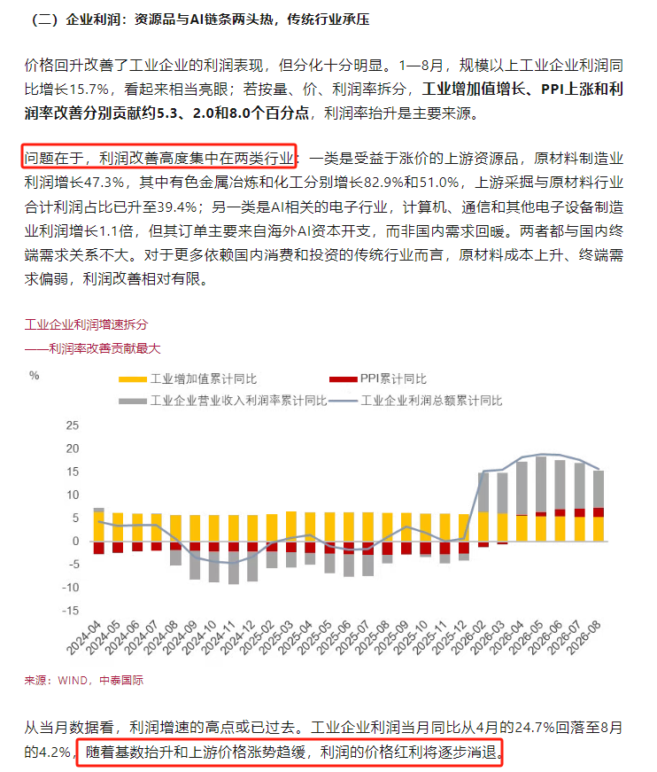
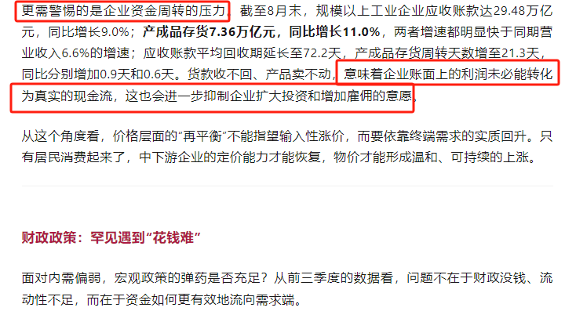
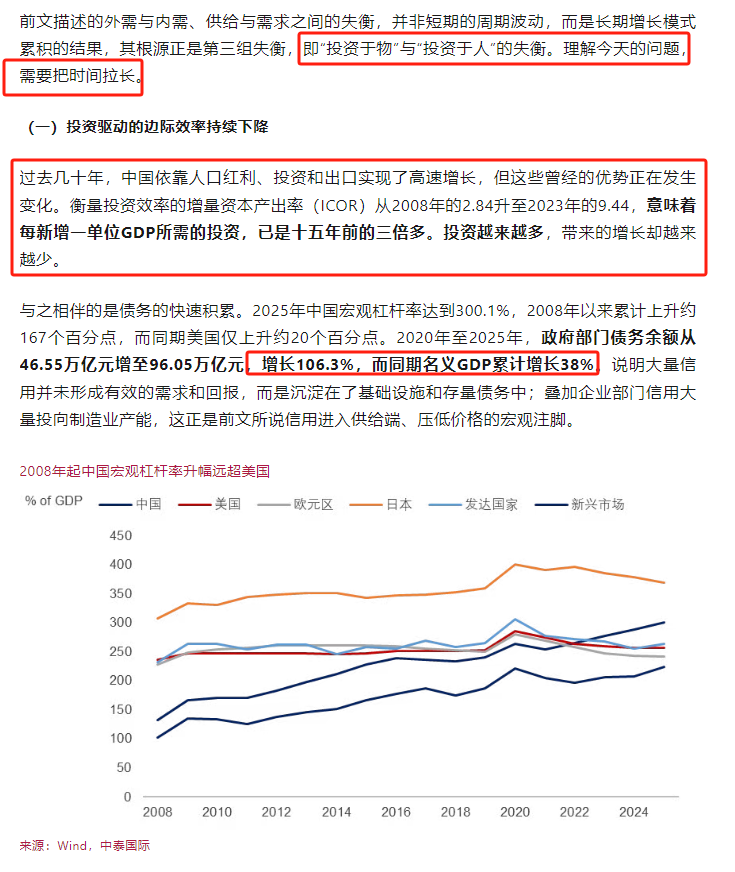
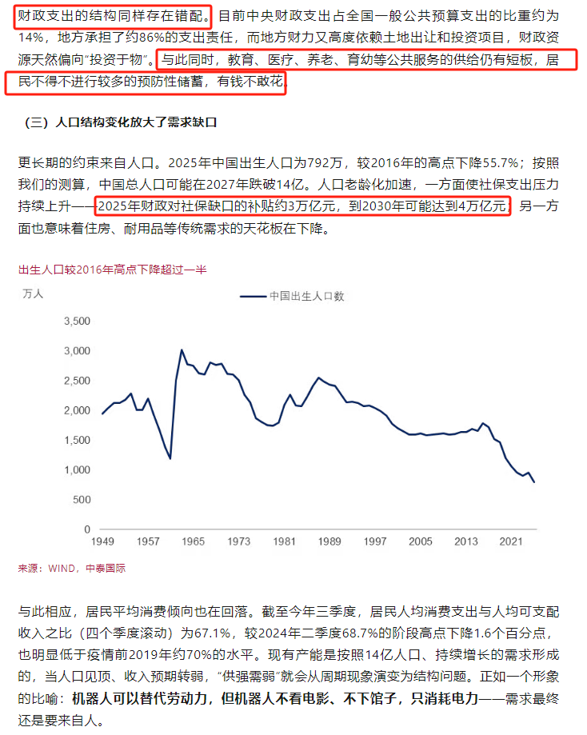
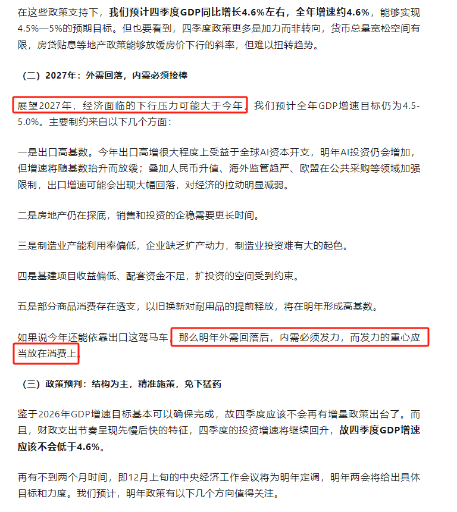
背景与关键数据
- “供强需弱”：生产能力很强、东西造得多，但居民和企业愿意买的不够，结果是价格上不去、企业赚钱难，经济学上叫“有效需求不足”。
- “投资于物 / 投资于人”：前者是修路、盖楼、建厂；后者是教育、医疗、养老、育儿等对人的投入。这篇文章认为，过去几十年偏重前者，现在回报在递减，需要补后者。
- 文章预测：四季度 GDP 同比约 +4.6%，全年约 +4.6%（目标 4.5–5%）；2027 年下行压力可能大于今年，GDP 目标仍可能是 4.5–5.0%，要靠内需（主要是消费）接棒。
- 下面“图片解读”里的数字，都来自截图中的正文，我只做了对应的核对与解释。
图片解读
- 图 1｜进出口与“出口高增要冷静看”：折线图画的是中国出口、进口当月同比（2025 年 3 月到 2026 年 9 月）。深蓝是出口、红是进口。2026 年 9 月出口同比约 +36%、进口约 +31%（目测），2026 年初出现过约 +39% 的出口尖峰（目测；单月波动很大，原文没有解释）。正文提出三点：①不宜高估出口的长期竞争力——2020–2025 年中国出口累计增长 45.6%，全球 48.8%，反而低了 3.2 个百分点，而且汽车、锂电池、光伏等增长很大一部分是“以价换量”；②今年出口的增长主要来自集成电路、自动数据处理设备等 AI 硬件，成品油、铝材等资源类产品则是国际大宗商品涨价带来的“价涨”，都难以说明“企业定价能力提升”，且与全球 AI 资本开支周期高度绑定，周期一转向，回落幅度可能很大；③AI 硬件链条资本密集、用工少，出口高增并没有转成居民收入和消费改善。结论（红框）：今年的高基数会成为明年的压力源，出口可能从今年最强的动力变成明年最大的变量。
- 图 2｜房地产与居民去杠杆：柱状图是重点城市商品房销售面积、销售金额、投资完成额、新开工面积、施工面积、竣工面积 7、8、9 月的同比，几乎全是负数，其中销售面积 9 月约 −20.5%，施工面积 7 月约 −39%（目测）。正文数字：前三季度房地产开发投资同比 −20.6%；前三季度住户贷款减少 1.03 万亿元，居民在“提前还贷、少借多存”；2026 年是居民部门缩表的第一年（中国居民杠杆率 2024 年才见顶，美国居民去杠杆已持续十余年）。9 月 29 日出台的房贷贴息政策（首套房、房价不超过 150 万元、面积不超过 120㎡），贴息后前五年房贷利率可降到约 2.1%，但文章认为影响更多是“信号”，不足以改变居民对收入和房价的预期。
- 图 3｜PPI 与“剪刀差”：PPI（工业品出厂价）在今年 3 月结束了连续 41 个月的同比下降，9 月同比 +5.0%、环比 +1.2%，前三季度累计 +2.3%；但 9 月 CPI（消费品价格）只有 +0.9%、核心 CPI +1.0%。上游涨、下游不涨 = 价格“剪刀差”，说明需求没跟上。折线图拆分了行业：采掘业 9 月约 +7.7%、原材料业约 +2.6%，而加工业和生活资料基本在 0% 附近（正文把采掘业的 7.7% 写作“环比”，图上纵轴只标了“%”，没写是同比还是环比，口径以原文为准）。结论（红框）：PPI 回升主要是国际能源价格和地缘冲突等“输入性”因素，不等于国内需求已出现趋势性改善。文章还提到：2010 年末至 2025 年末，中国 PPI 累计涨幅几乎为零，对比 2022 年美国和欧元区 CPI 一度 9.1%、9.6%，中国 CPI 最高仅约 2.5%。
- 图 4｜企业利润：堆叠柱状图把“工业企业利润累计同比”拆成工业增加值（黄）、PPI（红）、利润率（灰），灰蓝线是利润总额。1–8 月规上工业利润同比 +15.7%，其中工业增加值、PPI、利润率分别贡献约 5.3、2.0、8.0 个百分点（利润率是主要来源）。但红框指出：改善集中在两类行业——一是上游资源品（原材料制造业利润 +47.3%，有色金属冶炼 +82.9%、化工 +51.0%；上游采掘+原材料合计占利润比重 39.4%），二是 AI 相关电子行业（计算机、通信等利润增 1.1 倍，订单主要来自海外 AI 资本开支）；两者都与国内终端需求关系不大。利润同比的高点（4 月 24.7%）已过，8 月回落到 4.2%，“价格红利将逐步消退”。
- 图 5｜现金流与“花钱难”：8 月末规上工业企业应收账款 29.48 万亿元，同比 +9.0%；产成品存货 7.36 万亿元，同比 +11.0%，都明显快于营业收入增速（+6.6%）；应收账款平均回收期延长到 72.2 天，产成品周转天数 21.3 天。红框解读：“货款收不回、产品卖不动”，意味着账面利润不一定转化成真实现金流，会抑制企业扩大投资和增加雇佣的意愿。下面小标题“财政政策：罕见遇到‘花钱难’”——问题不在没钱，在于钱怎么更有效地流向需求端。
- 图 6｜投资效率与债务：这页回到“第三组失衡”——投资于物 vs 投资于人。红框数据：增量资本产出率 ICOR 从 2008 年的 2.84 升到 2023 年的 9.44，意味着每多增加一单位 GDP 所需的投资，是十五年前的三倍多（投资越来越多、带来的增长越来越少）；2025 年中国宏观杠杆率约 300.1%，2008 年以来累计上升约 167 个百分点，美国同期仅约 20 个；2020–2025 年政府部门债务余额从 46.55 万亿元增至 96.05 万亿元，增长 106.3%，同期名义 GDP 累计增长 38%。折线图（占 GDP 比重，2008–2025）把中国、美国、欧元区、日本、发达国家、新兴市场的杠杆率放在一起，中国从 2008 年的约 130% 升到约 300%（目测），目前只低于日本（约 370%）。
- 图 7｜财政结构与人口：财政支出“结构错配”——中央财政支出只占全国一般公共预算支出约 14%，地方承担约 86%，而地方财力又高度依赖土地出让和投资项目，所以资金天然偏向“投资于物”；教育、医疗、养老、育幼等公共服务供给有短板，居民“有钱不敢花”（预防性储蓄）。人口：2025 年出生人口 792 万，较 2016 年高点下降 55.7%；总人口可能 2027 年跌破 14 亿；2025 年财政对社保缺口补贴约 3 万亿元，2030 年可能到 4 万亿元。折线图是 1949–2024 年出生人口（万人）：1963 年约 3,000 万的高峰，到近年不足 800 万。居民消费倾向（人均消费支出 ÷ 人均可支配收入）三季度滚动 67.1%，较 2024 年二季度的 68.7% 高点下降 1.6 个百分点，也低于 2019 年约 70%。文中比喻：机器人可以替代劳动力，但机器人不看电影、不下馆子、只消耗电力——需求最终要来自人。
- 图 8｜预测与政策预判：预计四季度 GDP 约 +4.6%，全年约 +4.6%；政策更多是“加力而不转向”，货币宽松空间有限，房贷贴息只能放缓房价下行斜率、难以扭转趋势。2027 年：下行压力可能大于今年，原因包括出口高基数（AI 投资增速放缓、人民币升值、海外监管趋严）、房地产仍在探底、制造业产能利用率偏低、基建项目收益低、部分商品消费透支（以旧换新的高基数）。结论（红框）：如果今年还能靠出口这驾马车，明年外需回落后，内需必须发力，重心应放在消费上。 政策预判：四季度不太会有增量政策，12 月上旬的中央经济工作会议将为明年定调。
为什么重要 / 对市场和经济的含义
这篇文章是“中国宏观”的一份很完整的“体检报告”：好看的数字（出口、PPI、利润）背后依赖 AI 周期和大宗商品，可持续性取决于外部；而对国内最重要的指标（居民消费倾向、住户贷款、地产销售）仍在恶化。对市场而言：①如果明年外需回落、内需又没接上，企业盈利可能转弱；②政策上“消费”“社保”“养老”“育儿”将是更大的主题（和后面帖 8 的社保改革文章是同一条线）；③中央经济工作会议（12 月）是下一个重要观察点。
和今天其他帖子的对照：帖 5（摩根大通）数据显示财政收入同比还有 +5.1%，但支出只增 1.0%（目标 4.4%），恰好印证“罕见遇到花钱难”；帖 12 的写字楼租金、帖 3 的房价，则是“内需弱”的具体表现。
延伸知识
- ICOR（增量资本产出率）：衡量“多花多少投资才能多增加 1 单位 GDP”。数值越高，说明投资效率越低。比如以前花 2.84 元投资能多出 1 元 GDP，现在要花 9.44 元。它是“投资拉动型增长”走到后期的典型症状。
- 预防性储蓄：人们对医疗、养老、教育的未来支出没把握，就多存钱、少花钱。所以文章强调：想让居民多消费，光发消费券没用，需要让他们“不再担心”——也就是把社保、医疗、养老这些公共服务做实。
帖 5 · 2026-10-23 12:34（美西）· 摩根大通：中国 9 月财政收入首次转负
中国 9 月“一般公共预算收入”同比 −0.1%，是今年第一次负增长；而支出到现在只比去年增长 1.0%，远低于 4.4% 的全年预算目标——钱收得不多，花得更少。新增的 5500 亿元地方债额度可以缓解地方短期资金压力，为四季度和明年初带来一点增长支撑。读全文收起
帖子原文
JPM： 9月一般公共预算收入同比下降0.1%，为今年首次负增长。 主要受到企业所得税、消费税以及证券相关税收疲弱的拖累。年初至今财政支出累计同比仅增长1.0%，明显低于全年4.4%的预算增长目标。 尽管基础设施支出出现一定改善，但整体财政支出仍然疲弱。土地财政继续成为政府性基金收入的主要拖累。 土地出让收入下降，持续削弱地方政府的财政能力。新增5500亿元地方政府债券额度，有望缓解短期融资压力。 这可能为2026年第四季度及2027年初的经济增长带来一定上行空间。 #TAX#
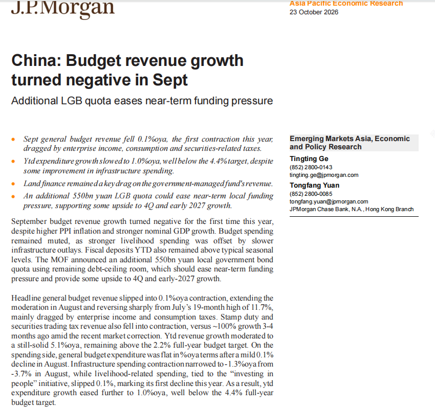
背景与关键数据
- 一般公共预算收入：政府主要靠税收（企业所得税、增值税、消费税、个人所得税、证券交易印花税等）和非税收入组成的“日常收入”。
- 政府性基金（土地财政）：地方政府卖地的收入（土地出让金）主要放在这个账户里，和一般预算分开记。房地产下行，这一块持续是拖累。
- “预算增长目标 4.4%”：政府年初定的“今年计划把支出增长多少”。截至 9 月只增了 1.0%，说明预算资金没花出去，或是在“留着”。
- 新增 5500 亿元 LGB（地方政府债券）额度：财政部在剩余的债务限额空间内，追加给地方发债的额度，让地方能多借钱。
- 补充：从截图里看，7 月财政收入同比曾达 11.7%（19 个月高点），8 月放缓，9 月转为 −0.1%；前三季度累计收入仍增 5.1%，高于全年预算目标（2.2%）。
图片解读
截图是摩根大通亚太经济研究的报告（2026 年 10 月 23 日），标题“China: Budget revenue growth turned negative in Sept”，副标题“Additional LGB quota eases near-term funding pressure”（额外的地方债额度缓解近期资金压力）。要点（原文大意）：
- 9 月一般预算收入同比 −0.1%，尽管 PPI 更高、名义 GDP 增速更强——也就是说“名义上经济数字在改善，但税没收上来”。主要拖累是企业所得税和消费税。
- 印花税和证券交易税：几个月前（市场上涨期）同比增速约 100%，现在转为收缩——股市调整直接反映在税收上。
- 支出：9 月一般预算支出同比持平（8 月为 −0.1%）；基础设施支出收缩幅度从 8 月的 −3.7% 收窄到 −1.3%；与“投资于人”相关的民生支出 −0.1%，是今年首次下降；前三季度累计支出增长 1.0%，远低于 4.4% 的预算目标。
- 财政存款（政府账户上放着的钱）仍高于往年同期的常态水平。
为什么重要 / 对市场和经济的含义
①财政“紧”：收入走弱、支出更弱，意味着财政没有给经济增加额外的“动力”，反而在“收敛”。这和帖 4 李迅雷所说“罕见遇到‘花钱难’”完全吻合：不是没钱，是钱没花到需求端。②风险点：税收转负，说明企业利润、消费和资本市场的“税基”在变弱；证券税收的下降与帖 10 里的 A 股波动连在一起。③积极的一面：新增 5500 亿元地方债额度，如果尽快用于基建或化解地方资金压力，对四季度、明年初的增长有一定支撑；另外也要看 12 月中央经济工作会议如何定调。
延伸知识
- 财政乘数：政府每多花 1 元，最终带动的 GDP 增加量。如果钱花在居民身上（转移支付、社保），边际消费倾向高的家庭会更快把钱花出去，乘数更大；如果花在效率低的项目上，乘数就低。所以“花得好不好”比“花多少”还重要。
- 土地财政：地方政府先卖地获得收入，再用这笔钱修基建，基建又推高地价，形成循环。房地产一旦下行，这个循环就变成“负循环”：卖不出地→没钱→少修基建→更少需求。这是中国地方财政这几年的核心压力。
帖 6 · 2026-10-23 12:37（美西）· 华泰：避险情绪主导，美联储加息预期被“几乎完整地 price out 一次”
（推测为 10-22 周四的美股交易日）科技股大跌、黄金大跌、油价继续涨，但美国 10 年期国债收益率单日下降约 17 个基点（回到约 5%），市场把美联储“还会加息”的预期从约 83 个基点砍到约 62 个基点——接近砍掉一次加息。华泰的看法：这是情绪性的极致反应，接下来更可能“震荡等待”，并提醒“资产之间的相关性在变，叙事在从‘过热’转向‘滞胀’”。读全文收起
帖子原文
华泰： AI融资担忧+中东地缘扰动两个因素共同作用下，避险情绪成为主导，货币市场对美联储剩余加息预期的计价从前一日83BP降至62BP左右，几乎完整price out了一次加息。从历史比较来看，美债利率单日下行超过17BP的，背景往往是重要信用风险事件（硅谷银行）、股市调整（次贷危机）或央行意外购债（2009年扩大QE），目前AI融资还是以结构性压力为主，且短期违约的概率不高，单日17BP的美债市场波动可能已是较为极致的情绪宣泄。 同时我们观察到，大类资产的相关性也出现了一定变化，或表明市场叙事正在切换：第一、油价上涨而美债利率大幅下行，在AI信用风险发酵后，高油价的交易逻辑也出现从过热转向滞胀的迹象，后续继续关注基本面的数据验证。第二、美债利率下行，但是黄金仍然大跌，表明短期黄金被动跟随科技股遭到抛售，同时也意味着黄金相对美债的性价比正在上升。第三、科技股普遍大跌，但VIX指数却相对克制，仅小幅升至19，甚至没有超过上周五的高点。美债已初步实现了空头回补和路径重定价，美联储年内加息预期不足一次，叠加10y美债利率回到5%关键点位，短期利率进一步走低阻力较大，预计震荡态势等待不确定性落地。 #金融#
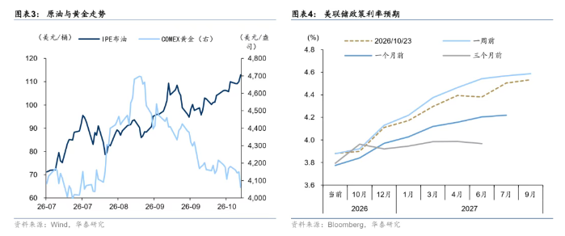
背景与关键数据
- price in / price out：“price in”是市场价格里已经包含了某个预期，“price out”是把这个预期从价格里剔除。“几乎完整 price out 了一次加息”＝市场认为美联储再加息的概率明显下降（62bp 约等于 2.5 次 25bp 加息的累积，对比 83bp 约 3.3 次）。
- BP（基点）：1bp = 0.01%。17bp = 0.17 个百分点，对 10 年期美债来说是很大的单日波动（正常日波动可能只有几个基点）。
- 华泰给的三个“历史对照”：美债收益率单日下降超过 17bp 的往常是：硅谷银行事件（信用风险）、次贷危机（股市调整）、2009 年美联储扩大 QE（央行意外买债）。华泰认为这次是“AI 融资的结构性压力”，不是明显的违约事件，所以 17bp 很可能已是情绪宣泄的“极致”。（原文没有细说具体的 AI 融资事件，只写“AI 信用风险发酵”。）
- 三个“相关性变化”（华泰的观察）：
- 油价涨 + 美债收益率大降。以前“油价涨”意味着通胀、经济过热、收益率上行；现在变成“滞胀”（经济疲软但物价高）担忧——所以债券被买、油价依然涨。
- 收益率下行，黄金却大跌：黄金通常和利率反向，这次是被动跟随科技股下跌（原文只说“被动跟随”；常见的解释是资金为了降低风险、补保证金而卖掉涨幅大的资产，这是我的补充）；但也意味着黄金相对债券的“性价比”提高了（债券收益率回落，持有黄金的机会成本下降）。
- 科技股大跌，但 VIX（标普 500 的隐含波动率指数，常被叫“恐慌指数”）只涨到 19，甚至没有超过上周五的高点——相对“克制”。
- 结论：美债已经完成了“空头回补 + 路径重定价”，年内加息预期不足一次；10 年期回到 5% 的关键位，短期利率再往下的阻力较大，预计震荡。
图片解读
截图来自华泰研究，两张小图：
- 图表 3：原油与黄金走势（2026 年 7 月到 10 月）：深色线是 IPE 布伦特原油（左轴，美元/桶），浅蓝线是 COMEX 黄金（右轴，美元/盎司）。布油从约 72 美元一路涨到约 112 美元；黄金在 8 月下旬冲到约 4,700 美元，随后一路回落，最近已跌回约 4,050–4,100 美元（目测）。信号：这是“滞胀”叙事的直观图——油价在涨，黄金这个传统避险品反而在跌。
- 图表 4：美联储政策利率预期（来源：彭博）：横轴是未来的会议月份（当前、2026 年 10 月、12 月，2027 年 1 月……9 月），纵轴是市场隐含的政策利率（%）。四条线：2026/10/23（虚线）、一周前、一个月前、三个月前。当前起点约 3.8–3.9%；今天的曲线到 2027 年 9 月约 4.5%（目测），略低于一周前的约 4.6%，但明显高于一个月前（那条线画到 2027 年 7 月约 4.2%）和三个月前（约 4.0%）。信号：过去三个月市场的加息预期是持续抬升的，周四的回落只是回吐了一部分。
- 我的补充（推测）：帖 2 里高盛提到“市场已定价到 2027 年底再加约 90bp”，那份报告成稿于周四美股开盘前（北京时间 10-22 17:51），时间点早于这次暴跌；华泰说的 83bp → 62bp 是暴跌之后的数字。两者看起来矛盾，其实是“前后两个时点”。
为什么重要 / 对市场和经济的含义
这条在讲：市场“押注”的故事在改变。原来是“通胀 + 加息 → 利率上行 → 长债抛售”，现在是“AI 融资出现问题 + 地缘 → 避险 → 买美债”。如果滞胀担忧继续上升，会出现“股票跌、债券涨、油价涨、黄金跌”这种不太常见的组合，传统的资产配置逻辑（股债对冲、黄金避险）需要重新校准。对 A 股、港股也有影响：美债收益率回落减轻了高盛在帖 2 里说的“利率冲击”，但美股科技股的下跌又会通过情绪传导（见帖 10 里周五 A 股盘中的大跌）。
延伸知识
- 滞胀（Stagflation）：经济增长停滞 + 通胀居高不下。1970 年代两次石油危机时美国就经历过。这种环境下央行很为难：加息压通胀会伤害增长，降息促增长又可能让通胀更高。所以华泰盯着“基本面数据验证”。
- “空头回补”与债券价格：做空债券的人在价格上涨时被迫平仓，买盘进一步推高价格——可以把它想成“踩踏式的买入”，这正是昨天上一期帖 6（彭博）讲的“空头挤压”。单日 17bp 的变化，很可能含有不少“被动买入”，不全是“基本面改变”，所以华泰说它是“极致的情绪宣泄”。
帖 7 · 2026-10-23 12:40（美西）· 摩根大通：美国养老地产的“黄金时代”
美国的老龄化正在从“老人变多”进入“特别老的老人变多”：85 岁以上人口 2025–2045 年预计增长约 129%，远快于“65 岁以上占比”的增幅（18.9% → 22.3%）。对养老地产（专门给老年人居住和照护的房地产）来说，85 岁以上人口才是需求的关键指标。读全文收起
帖子原文
JPM： 美国人口结构正在进入一个特殊时期。1946—1964年出生的婴儿潮人口，正在逐步进入高龄阶段。2026年，最早出生的婴儿潮人口年满80岁。这是美国养老地产的黄金时代。2025—2045年，美国85岁以上人口预计增长约129%。而同期65岁以上人口占比只从18.9%增加至22.3%。这说明养老地产面临的人口变化，不只是一般意义上的人口老龄化，而是老年人口内部的高龄化。对于养老地产而言，85岁以上人口的变化，可能比65岁以上人口总量更有解释力。 #其他国家经济#
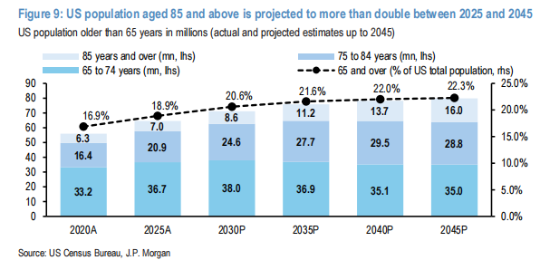
背景与关键数据
- 婴儿潮一代：二战后 1946–1964 年出生的那一代，人数特别多。1946 年生的人 2026 年刚好 80 岁；他们到 85 岁是 2031 年。
- 数字核对：图中 85 岁以上人口 2025 年 7.0 百万、2045 年 16.0 百万，16.0 ÷ 7.0 ≈ 2.29，即增长约 129%，与原文一致；65 岁以上占比从 18.9% 增至 22.3%，只多了 3.4 个百分点。
- 为什么“高龄化”重要：养老地产（如独立生活、辅助生活、失智照护、护理院等）的主要使用者通常年龄偏高、对照护的需求更强；65–74 岁的人大多还能独立生活，需求没那么强。（这是我的补充说明，原文没有展开。）
图片解读
图 9（来源：美国人口普查局、摩根大通），标题“美国 85 岁及以上人口预计在 2025–2045 年翻一倍多”。堆叠柱状图，单位百万人（左轴）；黑色虚线是 65 岁以上占总人口的比例（右轴）：
| 年份 | 65–74 岁 | 75–84 岁 | 85+ 岁 | 65+ 占比 |
|---|---|---|---|---|
| 2020（实际） | 33.2 | 16.4 | 6.3 | 16.9% |
| 2025（实际） | 36.7 | 20.9 | 7.0 | 18.9% |
| 2030（预测） | 38.0 | 24.6 | 8.6 | 20.6% |
| 2035（预测） | 36.9 | 27.7 | 11.2 | 21.6% |
| 2040（预测） | 35.1 | 29.5 | 13.7 | 22.0% |
| 2045（预测） | 35.0 | 28.8 | 16.0 | 22.3% |
信号：65–74 岁这一群人基本不增（甚至略降），75–84 岁到 2040 年前还在涨，增速最快的是 85+，从 2030 年起加速（8.6 → 11.2 → 13.7 → 16.0 百万），也就是婴儿潮一代进入“超高龄”的阶段。
为什么重要 / 对市场和经济的含义
这是一条很典型的“人口结构 → 行业需求”的投资叙事：需求端（85+ 人口）在未来 10–20 年确定性地大幅增加；至于供给端（新盖多少养老设施）、价格（租金能涨多少）、成本（人工、医疗）就要看具体公司和地区。它也提示：人口结构是慢变量但很确定，不像油价、利率那样每天波动。养老、医疗、护理服务、药品等相关行业，也是“人口老龄化”长期主题常被提到的方向。
对照帖 4：中国也在老龄化，但文章关注的是“出生人口下降 → 需求收缩 → 社保缺口”；美国这条是“高龄人口增加 → 养老服务需求增加”。同一个人口问题，在不同经济体里带来的机会和压力不一样。
延伸知识
- 老龄化的“两种速度”：“老龄化率”（65+ 占比）反映的是一个社会整体的年龄结构；“高龄化”（80+ 或 85+ 占 65+ 的比例）反映的是老年人群内部的变化。后者对医疗、护理、居住的需求更直接，因为人在 85 岁后更容易需要日常照护。
- 人口预测为什么相对可靠：2045 年 85 岁以上的人，现在已经出生（≥ 40 岁），不需要预测“未来出生多少人”，主要变数是死亡率、移民。相比之下，预测 GDP 或股价要靠很多不确定假设。所以人口预测常被用来做长期趋势判断。
帖 8 · 2026-10-23 13:06（美西）· 中央党校学报：税收和社保如何调节收入差距
这是一篇学术文章，核心观点：中国的税收和社保，对贫富差距的“再分配”作用比发达国家弱得多，社保缴费甚至拉大了差距；建议大幅提高农民基础养老金、缩小机关事业单位与企业职工的养老金差距（把机关事业单位的基本养老金替代率下调到约 50%）、统一制度、把社保支出占 GDP 比重逐步提高到 20%（2035 年）和 30%（2050 年）左右。（注意：这是学报文章里的政策建议，不是已出台的政策。）读全文收起
帖子原文
中央党校学报： 我国税收和社会保障制度对初次分配基尼系数的调节力度仍显不足，且养老保险和医疗保险缴费不仅没缩小收入差距，反而扩大了收入差距。应当将机关事业单位基本养老金替代率下调至与企业职工相同的50%左右。 #TAX#
（带 4 张图，是学报文章的截图。）
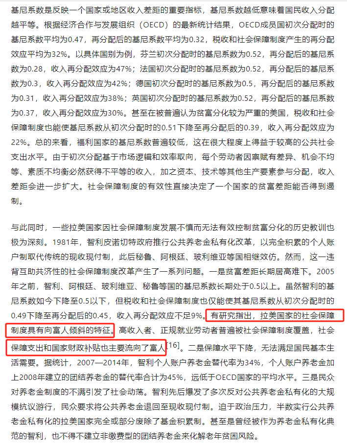
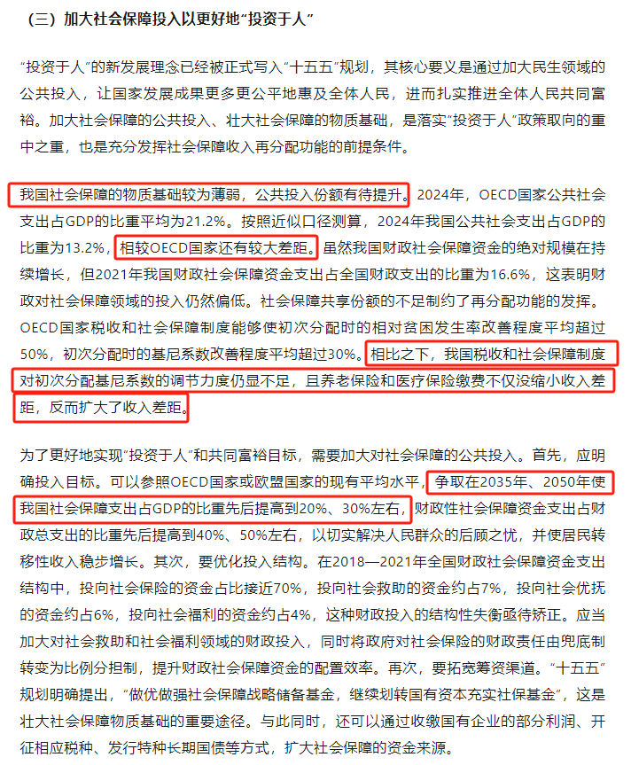
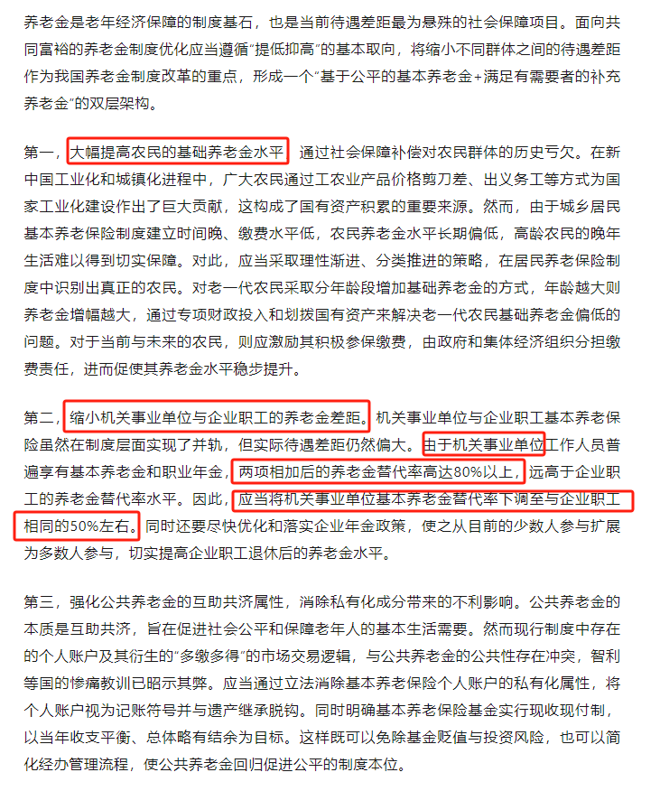
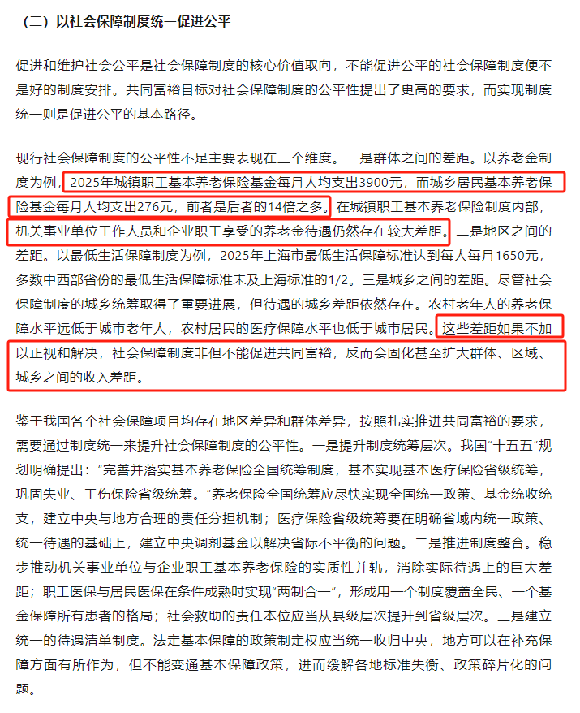
背景与关键数据
- 基尼系数：衡量收入不平等的指标，0 表示完全平等，1 表示最不平等；一般 0.4 以上就算差距较大。
- 初次分配 / 再分配：初次分配是市场决定的（工资、利润、租金等）；再分配是政府通过税收、社保、转移支付把一部分收入重新分配。“再分配效应”=（初次分配基尼 − 再分配后基尼）÷ 初次分配基尼，数字越大说明政府调节越有力。
- 养老金替代率：退休金 ÷ 退休前工资，比如 50% 就是退休金等于原来工资的一半。
图片解读
- 图 1｜国际对比：OECD 国家平均的基尼系数，初次分配 0.47，再分配后 0.32，再分配效应约 32%。具体国家：芬兰 0.52 → 0.28（效应约 47%），法国 0.52 → 0.30（42%），德国 0.50 → 0.31（38%），英国 0.52 → 0.37（30%），美国 0.51 → 0.39（22%）。所以福利国家的基尼系数普遍较低，靠的是较高的公共社会支出。拉美的反面教训：智利 1981 年推行养老金私有化（完全积累的个人账户），随后秘鲁、阿根廷、玻利维亚等效仿，出现了贫富差距长期居高、保障水平下降（2007–2014 年智利个人账户养老金替代率约 34%，加上团结养老金约 45%，远低于 OECD 平均）、民众抗议等问题；智利税收和社保只能把基尼从 0.49 降到 0.45，再分配效应不足 9%。红框：有研究指出，拉美的社会保障制度具有“向富人倾斜”的特征。
- 图 2｜“加大社保投入，更好投资于人”：2024 年 OECD 国家公共社会支出占 GDP 比重平均 21.2%，中国按近似口径约 13.2%；OECD 国家税收和社保使初次分配的相对贫困率改善程度平均超过 50%、基尼系数改善程度超过 30%，而我国调节力度仍显不足，且养老保险和医疗保险缴费反而扩大了收入差距（红框）。建议：争取 2035 年、2050 年社保支出占 GDP 比重先后提高到 20%、30% 左右，占财政总支出比重先后提高到 40%、50%；优化结构（目前投向社会保险约 70%、社会救助约 7%、社会优抚约 6%、社会福利约 4%）；拓宽资金渠道（划转国有资本、收缴国企部分利润、发行特种长期国债等）。
- 图 3｜养老金“提低抑高”：①大幅提高农民基础养老金，对老一代农民分年龄段增加；②缩小机关事业单位与企业职工的养老金差距——机关事业单位工作人员普遍有基本养老金和职业年金，两项相加的替代率高达 80% 以上，远高于企业职工；因此应把机关事业单位基本养老金替代率下调到与企业职工相同的约 50%，同时落实企业年金，让参与者从少数人扩展为多数人；③强化公共养老金的互助共济，消除个人账户的“私有化”成分（智利等国的惨痛教训），把个人账户视为“记账符号”、与遗产继承脱钩，基金实行现收现付制。
- 图 4｜制度统一促公平：差距体现在三个维度——群体之间：2025 年城镇职工基本养老保险基金每月人均支出约 3,900 元，城乡居民基本养老保险基金每月人均支出约 276 元，前者是后者的约 14 倍（3,900 ÷ 276 ≈ 14.1，核对无误）；地区之间：以最低生活保障标准为例，2025 年上海达到每人每月 1,650 元，中西部多数省份不到上海的一半；城乡之间：农村老年人养老保障水平远低于城市。红框：如果不正视，社保制度非但不能促进共同富裕，反而可能固化甚至扩大差距。建议：提升统筹层次（养老保险全国统筹、医保省级统筹）、机关事业单位与企业职工养老保险“实质性并轨”、职工医保与居民医保“两制合一”等。
为什么重要 / 对市场和经济的含义
这是对帖 4 里“投资于人”的具体落地版本：如果政府要刺激消费，一种办法是提高社保水平——让中低收入家庭（农民、城乡居民养老金很低的人）不必为养老多存钱。对宏观而言：①中长期的财政支出结构会往社保、养老、医疗倾斜；②需要钱——文章提出的 2035 年 20%、2050 年 30% 的目标，对应巨额增量支出（对照帖 4 提到的社保缺口补贴 2025 年约 3 万亿元、2030 年可能 4 万亿元）；③它涉及既有群体的利益调整（比如降低机关事业单位替代率），属于政策讨论的敏感话题，实际是否推行、怎么推行还不确定。这条帖在星球里的互动较多（15 个赞、5 条评论），说明读者关心。
延伸知识
- 现收现付制 vs 完全积累制：现收现付是“现在在职的人缴费，养活现在的退休人员”（代际互助）；完全积累是“每个人给自己存一个账户，将来用自己的钱”。后者看起来“公平”，但抗风险能力差（市场下跌、通胀会吃掉储蓄），也无法在不同收入人群之间再分配——这是智利教训的核心。
- 洛伦兹曲线和基尼系数：把人群按收入从低到高排序，画出“收入累计占比”曲线，曲线越贴近对角线越平等；基尼系数就是曲线与对角线之间面积的比例。直观理解：基尼 0.5 比 0.3 更像“少数人拿走大部分蛋糕”。
帖 9 · 2026-10-23 13:16（美西）· 彭博：桥水中国降了黄金，对中国股票“谨慎乐观”
桥水的中国业务在 9 月给投资者的信里说：①把之前超配的黄金逐步降下来（利率高了、油价高了，黄金吸引力下降）；②对中国股票“谨慎乐观”，认为三季度下跌主要是流动性原因而不是基本面恶化；③增加了原油配置，判断四季度供应中断和低库存可能让油价继续涨。它今年到 9 月底收益 +5.3%（费前），三季度亏了约 1%。读全文收起
帖子原文
bloomberg： 全球最大对冲基金之一桥水基金的中国业务部门在9月份的投资者信中表示，已经逐步降低此前对黄金的超配比例。主要原因有两个：首先，随着利率上升，持有黄金的机会成本增加。其次，油价上涨可能抑制印度等能源进口国的黄金需求。桥水同时对中国资产表达了一定程度的乐观态度。认为第三季度中国股市下跌，主要受到流动性因素驱动，而不是基本面出现根本性恶化。根据投资者信，截至2026年9月30日，桥水中国的本土“全天候增强策略”（All Weather Plus）今年以来取得了5.3%的费前收益。不过，第三季度亏损约1%。主动管理部分（Alpha）第三季度亏损1.5%。第三季度初，桥水对原油持中性观点。但随着市场环境变化，桥水判断，即使油价上涨，部分对价格不敏感的需求仍将保持强劲。因此，桥水逐步增加了原油配置。公司表示，这一判断后来得到了市场验证，也帮助控制了第三季度的投资损失。对于第四季度，桥水认为，供应中断和库存偏低可能推动油价进一步上涨。 #金融#
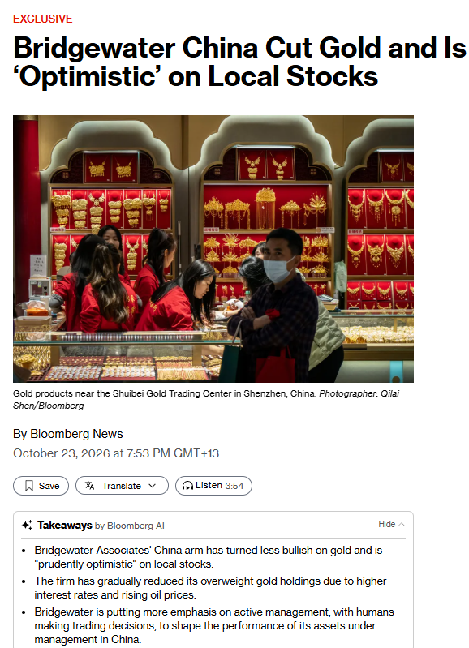
背景与关键数据
- 桥水（Bridgewater）：全球最大的对冲基金之一，创始人是达利欧（Ray Dalio）。**“全天候”（All Weather）**是它的风险平价思路：不赌某一个方向，而是在“增长上升/下降 × 通胀上升/下降”四种环境里平衡配置股票、债券、黄金、大宗商品等，让各类资产的“风险贡献”接近。“全天候增强策略（All Weather Plus）”是在此基础上加一部分主动管理。
- 超配（Overweight）：配置比例高于基准。降低超配就是“减仓”。
- 机会成本：黄金本身不产生利息，如果现金、债券的收益变高，持有黄金就意味着“放弃了更高的利息”，吸引力下降。10 年期美债 5% 左右就是这个背景（见帖 2、帖 6）。
- 为什么油价影响印度黄金需求：印度是全球主要的黄金消费国，同时是主要的能源进口国。油价上涨会推高进口成本、压低家庭购买力和卢比，黄金需求可能被抑制。
- 费前收益 +5.3%：扣除管理费、业绩提成之前的收益；三季度整体约 −1%，其中主动管理部分（Alpha）−1.5%。
- “流动性因素”：市场下跌不是因为企业盈利变差，而是资金面（比如抛压、杠杆、资金流出）造成的。
图片解读
截图是彭博的独家报道页面，标题“Bridgewater China Cut Gold and Is ‘Optimistic’ on Local Stocks”（桥水中国降低黄金配置，并对本地股票“乐观”）。配图是深圳水贝黄金交易中心附近的金饰柜台。页面上的彭博 AI 摘要（Takeaways）三条与帖子对应：①桥水中国对黄金不再那么看多，对本地股票是“审慎乐观”；②因为更高的利率和上涨的油价，逐步降低对黄金的超配；③更加强调主动管理（由人来做交易决策）。（注意：这是彭博页面自动生成的摘要，不是桥水本人的话。）
为什么重要 / 对市场和经济的含义
①黄金：这是“大资金在降黄金”的一个旁证，与帖 6 里“黄金大跌”“图表 3 里金价从 4,700 一路回落”呼应。如果利率长期高位，黄金的相对吸引力确实下降。②中国股票：桥水认为三季度的下跌是“流动性”问题，这个判断与帖 10 里国家队 ETF 成交创新高（即“有人在托底流动性”）的背景一致；但它也只是“审慎乐观”，并不是全面看多。③原油：桥水增加原油配置，并判断四季度可能更高——这条与帖 6 的“油价涨 + 债券涨”“滞胀”叙事是一致的。（Jason 把这条放在这一天，可能是想让大家把“利率—黄金—油—中国股票”放在一起看。）
延伸知识
- 风险平价 / 全天候：传统的 60/40（60% 股票 + 40% 债券）里，股票往往占到总风险的九成左右，其实是“押注股票”。风险平价让每类资产对整体波动的贡献相等，所以债券、黄金等“低波动”资产要加杠杆配多一点。好处是在不同经济环境下表现更平稳；缺点是遇到“股债同跌”（如 2022 年通胀飙升、利率飙升）时会比较难受。
- 黄金的定价逻辑：长期看，黄金与“实际利率”（扣除通胀后的利率）常呈负相关——实际利率越高，持有黄金的机会成本越大。但它还受央行购金、避险情绪、美元等影响，所以像帖 6 那样“利率降而金价跌”的情况，可以用短期资金面（被动去杠杆）来解释。
帖 10 · 2026-10-23 13:19（美西）· 彭博：国家队 ETF 成交创 7 月以来新高
周五（10-23）A 股盘中一度大跌 1.9%，午后沪深 300 快速拉起、收涨 1.7%；同一天，9 只“国家队”常用 ETF 合计成交 840 亿元（约 126 亿美元），创 7 月 20 日以来最高，其中易方达创业板 ETF 一天流入 197 亿元（两年来最高）。这是典型的“国家队出手”特征。读全文收起
帖子原文
bloomberg： 沪深300在昨天午后交易时段快速拉升，最终收涨1.7%，扭转了盘中一度高达1.9%的跌幅。根据彭博汇编的数据，周五，一篮子已知曾被中国国家队交易的9只ETF，合计成交额达到840亿元人民币（约126亿美元），创7月20日以来最高水平。其中，交易最活跃的是易方达创业板ETF。该ETF当天资金流入达到197亿元人民币，创两年来最高水平。此外，周四这9只ETF合计获得460亿元人民币净流入。 #A股#
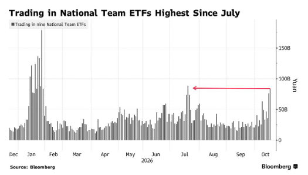
背景与关键数据
- 国家队：指代表国家出手稳定股市的资金，核心是中央汇金（以及证金、社保基金等），它们常通过买入宽基 ETF 托市。ETF（交易所交易基金）一次买入就等于同时买入一篮子成分股，速度快、冲击大，所以适合“救市”。
- 数字核对：840 亿元 ÷ 126 亿美元 ≈ 6.67 元/美元，是原文换算时隐含的汇率；两个数字自洽。
- 盘中 −1.9% → 收盘 +1.7%：一天之内的振幅约 3.6 个百分点，是很典型的 V 型反转。
- 成交额 ≠ 净买入：成交额是买卖加总，不一定都是国家队买的；净流入才是净增加的资金。所以文中提供了“易方达创业板 ETF 当日资金流入 197 亿元”和“周四 9 只 ETF 合计净流入 460 亿元”两个更接近“净买入”的数字。
- 和上一期的接力：上一期帖 4（彭博）说中央汇金今年上半年卖 ETF 回笼 2,310 亿美元，7 月后只重新买入 430 亿美元，还剩约 1,880 亿美元；今天这条是“正在加速使用”的一个实时例子（但今天这条是成交额，口径不同，别直接相减）。
图片解读
彭博图“Trading in National Team ETFs Highest Since July”（国家队 ETF 成交创 7 月以来最高）：横轴是 2025 年 12 月到 2026 年 10 月，每根灰色竖条是一天里 9 只国家队 ETF 的合计成交额，纵轴单位是亿元人民币（“B”表示十亿，所以 100B=1,000 亿元）。看图：
- 2026 年 1 月出现全图最高的峰值，约 1,800 亿元/天（目测，应对应当时大幅波动的时期）。
- 之后大多数时候在 200–500 亿元/天区间。
- 7 月 20 日前后有一个约 880 亿元/天的高点（图里红箭头指向它）。
- 最右端（10 月 23 日）约 840 亿元，是 7 月以来第一次回到这个水平。 信号：成交量放大意味着“有大资金出手”，但这个“大资金”是托底还是追涨，图上看不出来，需要结合盘面。
为什么重要 / 对市场和经济的含义
- “政策底”再次得到确认：国家队愿意在下跌日出手，意味着 A 股下跌空间被一定程度压缩，但也可能抑制上涨弹性（因为托市是在“稳”，不是在“拉”）。
- 与美股的联动：帖 6 描述的是美国周四科技股大跌、黄金大跌；周五 A 股开盘受到影响，午后国家队介入。三者在时间上吻合（这是我的推测，原帖没写因果）。
- 与财政数据连起来看：帖 5 里说印花税和证券交易税收入因为“近期市场调整”转负——股市下跌不仅影响财富效应，也直接影响财政收入，所以托市也有“稳税基”的含义。
- 桥水（帖 9）认为三季度下跌主要是流动性问题——国家队介入正是针对流动性问题的工具。
延伸知识
- “政策看跌期权”（Policy Put）：市场相信当股价跌到某个位置时，政府或央行会出手托底，就好像持有一份免费的看跌期权。这个说法最早用于美联储（“Greenspan Put”），在中国对应“国家队托市”。好处是减少暴跌；坏处是投资者可能过度依赖，风险被低估。
- 2015 年股灾：2015 年 6–8 月 A 股暴跌后，中央汇金等大举买入蓝筹股和 ETF，成为后来“国家队”概念的起点。此后每逢大跌，市场都会关注 ETF 成交量和资金流向，推测国家队是否出手。
帖 11 · 2026-10-23 13:27（美西）· ZeroHedge：特朗普的俄乌和平计划细节流出，泽连斯基沮丧
据媒体转述，特朗普的俄乌和平计划草案流出：乌克兰永久放弃加入北约的申请，换取欧盟成员资格的机会；顿巴斯设非军事区；俄罗斯恢复对欧洲（包括北溪）的天然气供应；美俄商业合作、解除制裁、恢复政治关系。泽连斯基公开表示沮丧。这些内容都未经美国政府正式确认，最早由《经济学人》披露。读全文收起
帖子原文
zerohedge： 特朗普对俄乌的和平计划，泽连斯基沮丧 #其他国家经济#
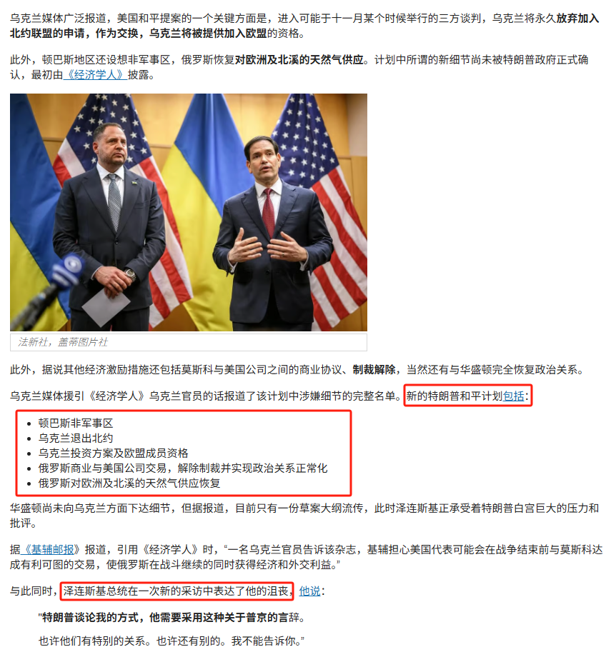
背景与关键数据
- 来源链：本帖是 ZeroHedge 汇总的文章（图片里是中文翻译版），引用乌克兰媒体、《经济学人》、基辅邮报等；原文明确说“计划中所谓的新细节尚未被特朗普政府正式确认”。所以全部是“据报道”，不是官方信息。
- 图片中列出的“新的特朗普和平计划包括”五点：①顿巴斯非军事区；②乌克兰退出北约；③乌克兰投资方案及欧盟成员资格；④俄罗斯商业与美国公司交易，解除制裁并实现政治关系正常化；⑤俄罗斯对欧洲及北溪的天然气供应恢复。
- 谈判时间：三方谈判（美国、乌克兰、俄罗斯）可能在 11 月某时举行。
- 各方立场：乌克兰人和欧洲人担心，华盛顿可能在乌克兰尚未获得关键安全保证之前，就推进华盛顿—莫斯科的双边关系改善；欧洲对特朗普“转向”泽连斯基感到愤怒；普京长期坚持“特别军事行动”要持续到俄罗斯的目标完成，并要求被吞并的领土被永久政治承认为俄罗斯所有。
- 泽连斯基的话（图 1 引述）：“特朗普谈论我的方式，他需要采用这种关于普京的言辞。也许他们有特别的关系。也许还有别的。我不能告诉你。”
图片解读
- 图 1：ZeroHedge 文章的前半部分截图。上半段写“美国和平提案的关键方面是乌克兰将永久放弃加入北约的申请，作为交换，乌克兰将被提供加入欧盟的资格”；中间是两位男士站在乌克兰与美国国旗前的新闻照片（图注只署“法新社，盖蒂图片社”，没有说明人物，我不做辨认）；红框是上述“五点计划”；下半段红框是泽连斯基的“沮丧”引述。
- 图 2：文章的后半段，含一条 X（原推特）上 @WarMonitor3 的截图（2026 年 10 月 23 日 9:44 PM）：“美国新的结束乌克兰战争的和平计划曝光：将沿当前前线或顿巴斯战斗结束时建立非军事区；乌克兰、俄罗斯与美国将启动三方谈判……”（推文被截断）。上面的文字说：恢复俄罗斯对欧洲天然气供应需要欧洲大力支持，而这可能很难，因为欧洲国家最近对特朗普“转向”泽连斯基感到愤怒；下面的文字提到普京坚持的立场，并说俄罗斯可能把“非军事化”顿巴斯条款视为未来政治承诺的前进路径。
为什么重要 / 对市场和经济的含义
如果真的走向谈判，会影响几条市场逻辑（以下是我做的“条件式推演”，不是预测）：
- 能源：“恢复对欧洲的天然气供应”和“解除制裁”如果落地，会压低欧洲天然气价格，也会影响美国 LNG（液化天然气）出口商的相对竞争力；对原油价格的影响则取决于制裁是否放松、俄罗斯石油出口能否恢复——这对帖 6 图表里约 112 美元（目测）的油价背景是潜在的“降温”因素，但也要看中东局势。
- 欧洲资产：如果欧洲被迫接受一个自己没有参与设计的方案，欧元、欧洲国防股、东欧资产会有波动。
- 地缘风险溢价：和平谈判的任何进展（或破裂）都会直接影响风险偏好，这也和帖 6 说的“中东地缘扰动”叠加。
- 最大的不确定性：计划还没被官方确认，俄罗斯（要求领土被永久承认）与乌克兰、欧洲的底线差距很大，从“草案泄露”到“真正签字”差距很大。
延伸知识
- 非军事区（DMZ）：在两方之间划出一片“双方都不得部署军队”的缓冲地带，最典型的例子是 1953 年朝鲜半岛停战后的三八线非军事区。它能降低意外冲突，但并不等于“和平条约”，几十年后冲突风险依然存在。
- “芬兰化”（Finlandization）：冷战时期，芬兰在保持独立的同时，对苏联外交上保持中立、不加入北约。“乌克兰永久放弃加入北约”在某种程度上就是一种类似的“中立化”设想，争议在于：没有安全保证的中立，能不能真正保住国家安全？这也是乌克兰和欧洲最担心的地方。
帖 12 · 2026-10-23 16:42（美西）· 中指院：三季度写字楼租金环比 −1.07%
中指院（中国房地产指数研究院）数据：三季度重点城市写字楼租金环比 −1.07%，前三季度累计 −2.07%；他们预计四季度继续下行，AI 等新产业有增量需求，但“拉动有限”，部分核心城市跌幅可能收窄。读全文收起
帖子原文
中指院： 2026年三季度重点城市写字楼租金环比下跌1.07%，前三季度累计下跌2.07%。展望四季度，宏观政策预计将继续保持积极取向，经济预计延续温和修复态势，但修复基础仍需进一步巩固，内需改善仍需时间。写字楼市场或继续处于筑底阶段，企业办公空间扩张意愿或偏谨慎，人工智能等新兴产业有望产生增量需求，但对市场整体的拉动作用有限，且从产业增长传导至租赁需求落地仍需时间。写字楼租金预计将继续下行，但部分核心城市租金跌幅有望逐渐收窄。 #经济数据#
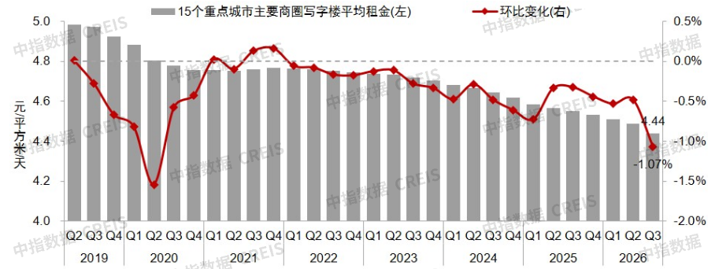
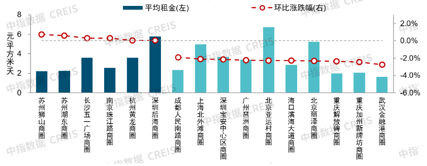
背景与关键数据
- 环比 / 同比：环比是“和上一季度比”，同比是“和去年同期比”。写字楼租金环比 −1.07%，意味着这个季度比上一季度降了约 1.07%。
- 数字核对：图 1 中 15 个重点城市主要商圈写字楼平均租金 2026 年三季度为 4.44 元/㎡/天（原图标注）；2019 年二季度约 4.98 元。从高点算起累计下跌约 11%（4.44 ÷ 4.98 − 1 ≈ −10.8%，我自己算的）。
- 写字楼租金为什么重要：写字楼租金反映企业的扩张意愿和就业状况；写字楼本身也是银行贷款的抵押品、地方税收和土地收入的来源之一。
- 与前几帖的关系：写字楼需求是“内需偏弱”的一个侧面——企业对未来没信心就不愿多租办公室（帖 4 里也提到制造业产能利用率偏低、企业应收账款增加）。
图片解读
- 图 1｜15 个重点城市主要商圈写字楼平均租金（元/㎡/天）与环比变化：灰色柱是平均租金（左轴 4.0–5.0），红线是环比变化（右轴 −2% 到 +0.5%）。从 2019 年二季度 4.98 元一路下降，2020 年二季度（疫情冲击）环比 −1.55% 是图里最大的单季跌幅；2021 年短暂企稳，之后又缓慢下行；2026 年三季度环比 −1.07%，是图里除 2020 年二季度之外跌幅最大的一次，平均租金 4.44 元，创图中最低。
- 图 2｜主要商圈的租金和环比涨跌幅：柱子是平均租金（左轴，元/㎡/天），红色虚线是环比涨跌（右轴）。左边深蓝柱（环比上涨或持平）：苏州狮山、苏州湖东、长沙五一广场、南京珠江路、杭州黄龙、深圳后海（约 +0.7% 到 0%）；右边浅蓝柱（环比下跌，跌幅在 −1.9% 到 −2.7% 之间）：成都人民南路、上海北外滩、深圳宝安中心区、广州琶洲、北京亚运村、海口滨海大道、北京丽泽、重庆解放碑、重庆加州新牌坊，武汉金融港跌得最多（约 −2.7%，目测）。信号：商圈之间分化明显——涨或持平的主要是苏州、长沙、南京、杭州的商圈，以及租金较高的深圳后海（持平）；跌幅较大的有北京、上海、广州、成都、重庆、武汉、海口等地的商圈。不是所有商圈都在跌，但下跌的商圈更多。
为什么重要 / 对市场和经济的含义
写字楼租金的逻辑：企业不愿扩张 → 空置率高 → 业主降租金吸引租户 → 租金下行。中指院认为四季度租金继续下行，只有部分核心城市有望收窄；AI 带来增量需求但有限、传导慢，说明需求仍弱，供给仍多。对金融系统的含义：商业地产价值（租金 ÷ 资本化率）下降，会影响持有商业地产的企业、银行的抵押品、REITs（不动产投资信托）的估值。在“长债收益率约 5%”（帖 2、6）的背景下，资本化率上升、租金下降，估值受双重挤压。
延伸知识
- 资本化率（Cap Rate）与估值：商业地产价值≈净租金收入 ÷ 资本化率。比如一栋楼每年净租金 5,000 万，资本化率 5%，估值 10 亿；如果利率上升让资本化率升到 6%，估值降到约 8.3 亿；如果同时租金再降 10%，估值只有约 7.5 亿。这就是租金下行和利率上行的“双杀”。
- 租金是“滞后指标”：写字楼租约多是 3–5 年，租金调整慢；先看空置率、再看租金，最后才看价格。所以“租金放缓下跌”往往比“空置率回落”更晚，说明筑底需要时间——这也是中指院说“筑底阶段、仍需时间”的原因。
今日全图索引
| 帖号 | 时间（美西） | 主题 | 标签 | 图片文件名 |
|---|---|---|---|---|
| 帖 1 | 10-23 12:14 | 摩根大通：新西兰央行下周改为加息，终点 3.50% | #其他国家经济# | post1_img1.png |
| 帖 2 | 10-23 12:20 | 高盛：美国利率升、中国利率降，现金回报是最佳对冲（含 PDF 附件） | #金融# | post2_img1.png |
| 帖 3 | 10-23 12:23 | 普睿：上海二手房价差收窄、折扣率回升到 83% | #房价# | post3_img1.png, post3_img2.png, post3_img3.png |
| 帖 4 | 10-23 12:31 | 李迅雷：以改革破除体制障碍、“投资于人”补需求短板 | #经济数据# | post4_img1.png, post4_img2.png, post4_img3.png, post4_img4.png, post4_img5.png, post4_img6.png, post4_img7.png, post4_img8.png |
| 帖 5 | 10-23 12:34 | 摩根大通：中国 9 月财政收入首次转负，新增 5500 亿地方债额度 | #TAX# | post5_img1.png |
| 帖 6 | 10-23 12:37 | 华泰：避险情绪主导，美联储加息预期被砍到 62bp | #金融# | post6_img1.png |
| 帖 7 | 10-23 12:40 | 摩根大通：美国养老地产与 85 岁以上人口 | #其他国家经济# | post7_img1.png |
| 帖 8 | 10-23 13:06 | 中央党校学报：税收和社保对收入差距的调节 | #TAX# | post8_img1.png, post8_img2.png, post8_img3.png, post8_img4.png |
| 帖 9 | 10-23 13:16 | 彭博：桥水中国降黄金、对中国股票“谨慎乐观” | #金融# | post9_img1.png |
| 帖 10 | 10-23 13:19 | 彭博：国家队 ETF 成交创 7 月以来新高 | #A股# | post10_img1.png |
| 帖 11 | 10-23 13:27 | ZeroHedge：特朗普俄乌和平计划细节流出 | #其他国家经济# | post11_img1.png, post11_img2.png |
| 帖 12 | 10-23 16:42 | 中指院：三季度写字楼租金环比 −1.07% | #经济数据# | post12_img1.png, post12_img2.png |